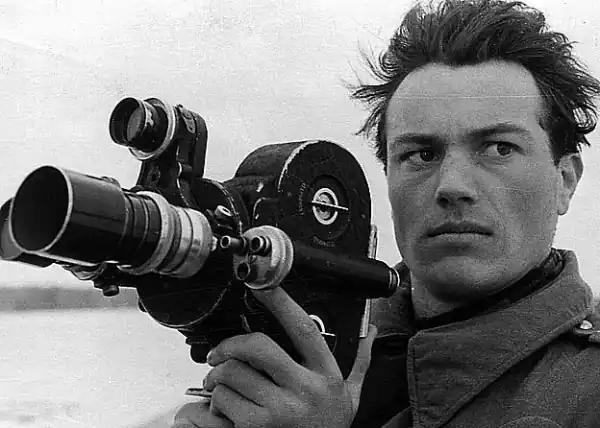
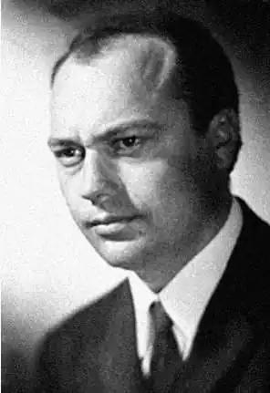

Микола Вінграновський
(Народився 7 листопада 1936)
ЧАРІВНИК СЛОВА Вельми небуденне явище в нашій літературі — поезія Миколи Вінграновського. Кажу: поезія, хоч в останні роки він більше пише прозу. Проте і проза його навдивовижу поетична. Він у всьому поет. А щоб пізнати поета, радив колись мудрий Гете, треба піти в його країну... Що ж таке: поетова країна? Це не просто географічне чи політико-адміністративне поняття. Це і земля, де він народився і зростав, де вбирав у себе безліч вражень дитинства, що формували основу його духу. Це і доба, що дала настроєність і масштаб цьому духові. Це і люди, в яких і через яких поставали йому земля і доба: батько і мати, кревні й сусіди, друзі й ровесники... Це народ. Це великі книги й великі імена, до яких тягнувся... Земля... Миколаївщина, південь України, де зустрілися дві безмежності — неба й степу. Степова річка Кодима, маленька посестра Бугу й Дніпра, в якій — відчуття близькості могутнього пониззя Дніпрового й козацького Чорномор'я. Одноманітний і непоказний для невтаємниченого, а насправді щедрий і ласкавий, зворушливий світ полину і чебрецю, воронців і молочаю, фантастичних гарбузів і сліпучих помідорів на городах, міріад коників-скрипалів у траві й солістів-жайворонків у небі (тоді ще так було!), палючого сонця і нечастих теплих дощів, скупих рос і лютих суховіїв, золотих хлібів і манливих підземних скарбів... У прадавні часи тут переходили й витісняли один одного десятки войовничих народів, залишивши по собі тьмяні спогади в історії, — аж поки заселив цю землю наш народ, скропивши її своїм потом і кров'ю... Час... Рік народження: 1936-й. Той, що дав літературі українській ще й Івана Драча, Володимира Підпалого, Віталія Коротича; роком раніше народилися Василь Симоненко і Борис Олійник, роком пізніше — Євген Гуцало. Майже всі ті, кого пізніше назвали поколінням шестидесятників, хто разом із трохи старшими Григором Тютюнником, Ліною Костенко, Дмитром Павличком, Віктором Близнецем та трохи молодшими Валерієм Шевчуком, Володимиром Дроздом та іншими ознаменували нову хвилю в українській літературі, визначали обличчя молодого тоді літературного покоління. Їх називали "дітьми війни". Справді, на їхню дитячу долю випали тяжкі випробування воєнного лихоліття та повоєнної відбудови. І ці враження потім лягли в основу багатьох їхніх творів. Але хочеться звернути увагу й на інше в долі цього покоління. Великі історичні події, картини зрушення світу, запавши в дитячу свідомість, сприяли формуванню такого душевного ладу, в якому визрівали розмах уяви, масштабність мислення, дух тривожної причетності до історії, почуття відповідальності за долю свого народу. Отож — народ... Це покоління відчувало свою органічну причетність до нього. Воно бачило, як їхні матері, залишившись самі, не тільки годували країну, а й крилом своїм осінили майбутнє країни в дітях своїх... Як батьки, що поверталися з фронтів, — далеко, далеко не всі, — зранені й калічені, ставали до плугів і верстатів. Як старші брати й сестри "вербувалися" (або їх мобілізували!) на відбудову шахт Донбасу й заводів Запоріжжя. Як їхні ровесники (та й самі вони!) вчилися уривками між прополюванням буряків у колгоспі, заготівлею палива для школи й усілякою роботою на присадибній ділянці; читали при каганці, писали між рядків старих уцілілих книжок, бо зошитів не було, а за підручниками займали чергу, бо їх чи й було по одному на клас, а проте мріяли (принаймні багато з них) стати неодмінно льотчиками, моряками, вченими, дипломатами, артистами, поетами. І ставали, ставали, дарма що прибивалися до столиць у балетках-"прорезинках" і полотняних сорочках та з фанерними чемоданами на два пуди картоплі... Неповторна, щемливо зворушлива мішанина нужди, вбогості, високих поривань, наївності й чіпкої енергії, малих матеріальних та великих духовних запитів... Не сліпий випадок, а велика потреба нашого народу в духовному відродженні, в припливі нових творчих сил стояла за долею кожного з отих "дітей війни" і вела їх дорогами, всю символічну значущість яких видно лиш тепер... Так і Миколу Вінграновського привела вона з Богопільської (нині Первомайської) школи на Миколаївщині — через захоплення Шевченком, Пушкіним, Лєрмонтовим — до Київського театрального інституту, "вивела" на Олександра Петровича Довженка, непомильне око якого зразу ж вирізнило обдарованого юнака, а щаслива рука "коронувала" на долю артиста, кінорежисера й поета, на болісну й щасливу причетність до вічного творення духовності свого народу... Пам'ятним і неповторним був для української поезії 1961 рік. "Літературна газета", попередниця теперішньої "Літературної України", подала низку щедрих і дерзновенних публікацій віршів на всю сторінку, відкривши читачам ряд імен, які зразу ж привернули загальну увагу шанувальників українського слова і без яких сьогодні не уявиш нашої літератури. 7 квітня газета вийшла із заголовком на всю четверту сторінку: "Микола Вінграновський. З книги першої, ще не виданої". Фото красивого інтелігентного юнака, який гордо ступає київською вулицею, — і п'ятнадцять віршів, що відтоді так і лишилися в українській поезії її непритьмянілими перлинами: "Прелюд Землі", "Зоряний прелюд", "Прелюд кохання" та інші. 5 травня так само на всю сторінку: "Вірші лікаря Віталія Коротича". 18 липня — "Ніж у сонці. Феєрична трагедія в двох частинах" Івана Драча. 17 вересня — "Зелена радість конвалій" Євгена Гуцала... Не часто трапляється, щоб перші газетні публікації віршів ще не відомих авторів викликали такі рясні відгуки й полеміку, як воно сталося з Миколою Вінграновським та Іваном Драчем. Багато читачів гаряче вітали їх. Але не бракувало й таких, кого вірші молодих поетів спантеличили: в них знаходили "штукарство", "туманності", "навмисну ускладненість", "деструкцію" тощо. Трохи вгамував пристрасті виступ Максима Тадейовича Рильського, який одну із своїх "вечірніх розмов", що тоді регулярно друкувалися у газеті "Вечірній Київ", цілком присвятив поетичним дебютам М. Вінграновського, І. Драча, В. Коротича. Висловивши низку зауважень, він водночас підкреслив безумовну обдарованість та перспективність молодих авторів, їхнє право на власні пошуки; при цьому особливо відзначив національну емоційну стихію та довженківське начало у Миколи Вінграновського. Вагомим актом поетичного самоствердження Миколи Вінграновського стала його перша поетична збірка "Атомні прелюди", що вийшла 1962 року. (До речі, майже одночасно вийшла і перша збірка Василя Симоненка "Тиша і грім", як і перша збірка Івана Драча "Соняшник"). Книжка вразила і багатьох окрилила своєю незвичайністю — масштабністю поетичної думки й бентежною силою уяви; діапазоном голосу, що вміщав у собі і громадянську патетику, і благородний сарказм, і щемливу ніжність; високим моральним тонусом і самостійністю громадянської позиції, тією гідністю і суверенністю, з якими говорилося про болі народу, проблеми доби, суперечності історії. Космос, людство, земля, народ, доба, Україна — ось який масштаб узяла поетична мова Вінграновського, ось у яких вимірах жив його ліричний герой. Наступна поетична збірка Миколи Вінграновського вийшла через п'ять років. Звалася вона "Сто поезій", але насправді в ній їх було... дев'яносто дев'ять. Це сталося внаслідок різних цензурних втручань і "перетрясок", і така невідповідність виглядала символічно, бо вказувала на ті труднощі, які поетові доводилося долати на шляху до читача. На той час уже відбулися не лише ідеологічні погроми, жертвами яких стали поети-шестидесятники та інші молоді митці, а й політичні арешти національно активної молоді. На зміну хрущовській відносній "відлизі" приходило те, що пізніше дістало назву брежнєвського "застою", хоч фактично було не застоєм, а реакцією. Суспільна атмосфера стала вкрай несприятливою для вільної творчості, для реалізації таланту в будь-якій сфері мистецтва і культури. Потрібна була велика душевна опірність, щоб вистояти, залишитися собою, говорити з читачем несфальшованим голосом. Микола Вінграновський зміг це зробити, хоч, звичайно, він сам змінювався: нові обставини, новий життєвий досвід, природний внутрішній розвиток, — а відповідно змінювався і характер його поезії. На місце громадянської вибуховості починають приходити розважливість і роздумливість; патетичні та героїчні інтонації обростають обертонами журливості, гіркоти, тихої радості; масштабність притишується зосередженістю. Вже вгадується внутрішній рух від душевної "романтики" до душевного "реалізму". Виразним свідченням дальшого творчого розвитку Вінграновського стала збірка "На срібнім березі" (1978). Поетів голос став начебто тихішим, але відбулося внутрішнє ускладнення й збагачення його лірики, підвищилася прихована, в собі зосереджена інтенсивність душевного життя. А 1984 року вийшла просто дивовижна невеличка книжечка — "Губами теплими і оком золотим". В ній органічно переплелися і картини природи, і спогади дитинства, й інтимна лірика, і предметна реальність світу, і химерія, і казка, і добра витівка, і гумор, і затамована жура: найбуденніші будні людини і природи постають як світова містерія... Потім були ще поетичні збірки, була велика книжка "Вибраного" (1986), в якій, до речі, була представлена і проза (до неї ми ще повернемось). Остання ж збірка — "Цю жінку я люблю" (1990) — містить, крім інтимної лірики, ще й раніше не публіковані вірші з 60—70-х років та нові поезії, в яких Вінграновський немовби вертається до свого громадянського пафосу періоду "шестидесятництва", але вже в іншій якості — із складнішим, драматичнішим розгортанням думки й переживання... Поезія Миколи Вінграновського вся напружено й тремко зосереджена на "клятих питаннях" — і вічних, і нашої доби. Щоб переконатися у цьому, варто перечитати бодай кілька давніших та новіших творів — "Демона", "Елегію", "Український прелюд", "Оксані", "Поїхали на Сквиру...", "До себе", "Останню ніч Богуна", "Хтось опівночі..."; власне чи не кожен вірш це засвідчить. Але його поезія переступає через декларативне і понятійне з'ясування цих питань буття особистості, нації, людства — і оперує глибинними емоційними планами, образами уяви, драматичними картинами душевних переживань.